vignettes/plotting_ftir_spectra.Rmd
plotting_ftir_spectra.Rmd(Version français ci-dessous)
Many chemists use Fourier Transform Infra-red spectroscopy (FTIR) to analyze chemicals and materials in their laboratories. They may test for purity, composition of mixtures, changes in functional groups, or evaluate other properties. These spectra are sometimes included in journal articles but, as of yet, R has not had a convenient tool for plotting spectra.
In this document we’ll be using the built-in data in the
PlotFTIR package to demonstrate loading data, modifying it,
and plotting the resulting spectra. While the package doesn’t have raw
data files, we will simulate this portion by reading the built-in data
from disk.
To read FTIR files into R, the PlotFTIR package must be
installed and loaded. Installation of the stable version of the package
can be from CRAN.
install.packages("PlotFTIR")If you want to install the development version of this package, this
can be done using the devtools package:
devtools::install_github("NRCan/PlotFTIR")Once installed by any method, the package needs to be activated in R before use.
This document presumes you have FTIR spectra files in .csv, .txt
(comma delimited), or .asp format. Additional file types may be
supported in the future. We can read files individually using the
read_ftir() function, or (as we’re about to do) you can
read any number of files in a directory. Our data is stored in a
file_directory variable, but you can provide your own
location (such as “C:/Users/[userid]/FTIR/Data” or wherever your files
are stored).
spectra <- read_ftir_directory(
path = file_directory,
files = c("toluene.csv", "heptanes.csv", "isopropanol.csv", "paper.csv", "polystyrene.csv"),
sample_names = c("toluene", "heptanes", "isopropanol", "paper", "polystyrene")
)
head(spectra)
#> PlotFTIR data:
#> Spectral range: 650.4205 - 659.7388 cm⁻¹
#> Resolution: variable
#> Intensity type: absorbance
#> Number of samples: 1
#> Sample IDs: tolueneLet’s look at the structure of the data we’ve loaded:
print(spectra)
#> PlotFTIR data:
#> Spectral range: 650.4205 - 3999.434 cm⁻¹
#> Resolution: variable
#> Intensity type: absorbance
#> Number of samples: 5
#> Sample IDs: toluene, heptanes, isopropanol, paper, polystyreneHaving loaded the data, we can see that it has a structure of three
columns, named wavenumber, absorbance and
sample_id. We’ve read a few files in so all of the spectra
are included in the one spectra object.
The loaded spectra can be plotted (with reasonable defaults) in just one line of code:
plot_ftir(spectra)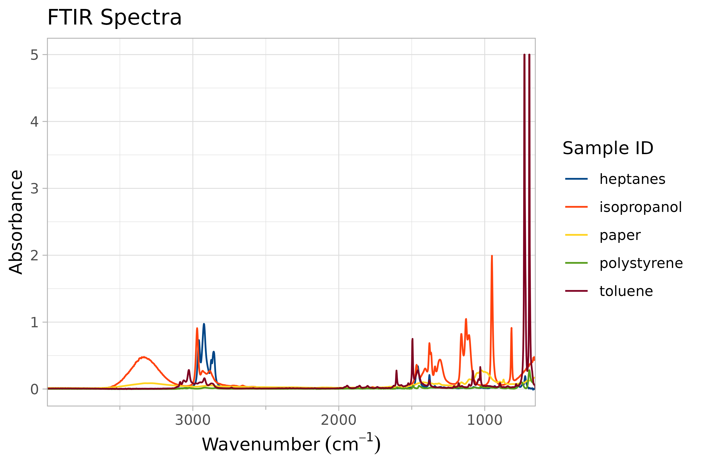
If plotting multiple samples (as we are here), you can offset the samples in the y axis to be able to more clearly see differences where they may have otherwise overlapped near the baseline:
plot_ftir_stacked(spectra)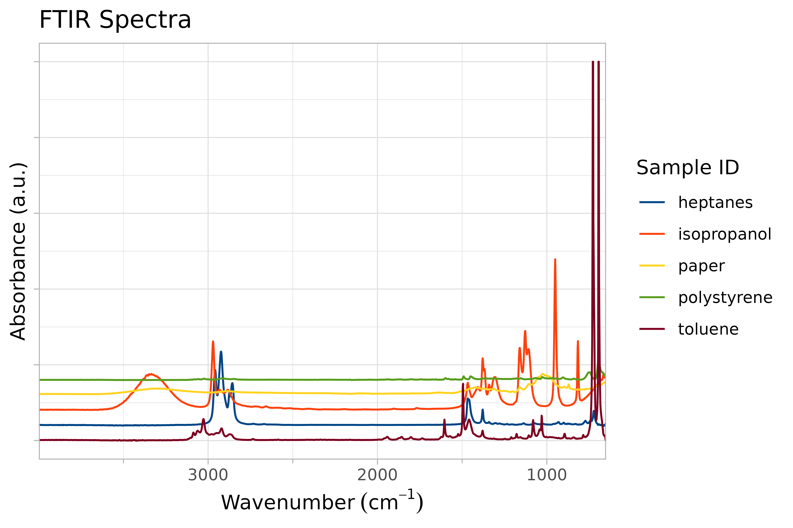
We can modify this plot a number of ways:
The plot title and subtitle, and the legend title are all
customization. The location of the legend can be changed too! To add a
subtitle, pass a two-element string vector to the
plot_title argument of plot_ftir().
plot_ftir(spectra, plot_title = c("Title of my Spectra Plot", "Plotted with PlotFTIR"), legend_title = "Samples:") |>
move_plot_legend(position = "bottom")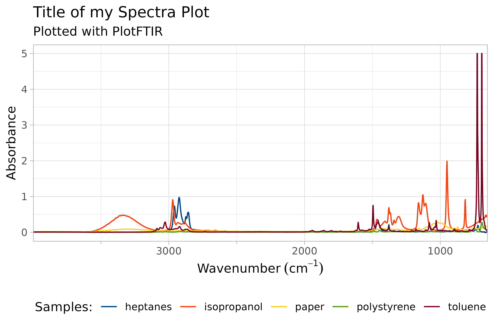
Once a plot has been produced, it’ easy to rename the samples in the
legend. This might be useful when moving from exploratory analysis to a
final output product, or if the sample names in the raw data are very
long and you have short-forms that you want to show on the plot. The
format for the renaming is "new_name" =
"old_name". Not all sample_id need to be
matched, samples without a rename given will retain the name they
currently have.
plot_ftir(spectra) |>
rename_plot_sample_ids(sample_ids = c("Methylbenzene" = "toluene", "C7" = "heptanes"))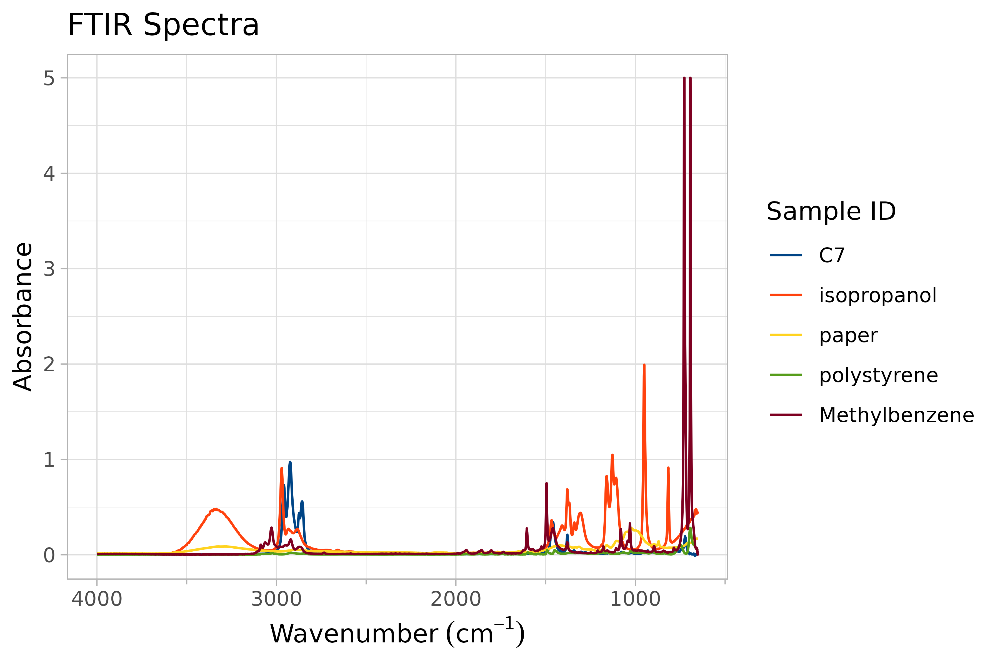
The lower energy region of a FTIR plot may not be of much interest. We can compress those to both save graphical space and enhance the view of the more complex fingerprint region at higher energy.
plot_ftir(spectra) |>
compress_low_energy(cutoff = 1850, compression_ratio = 5)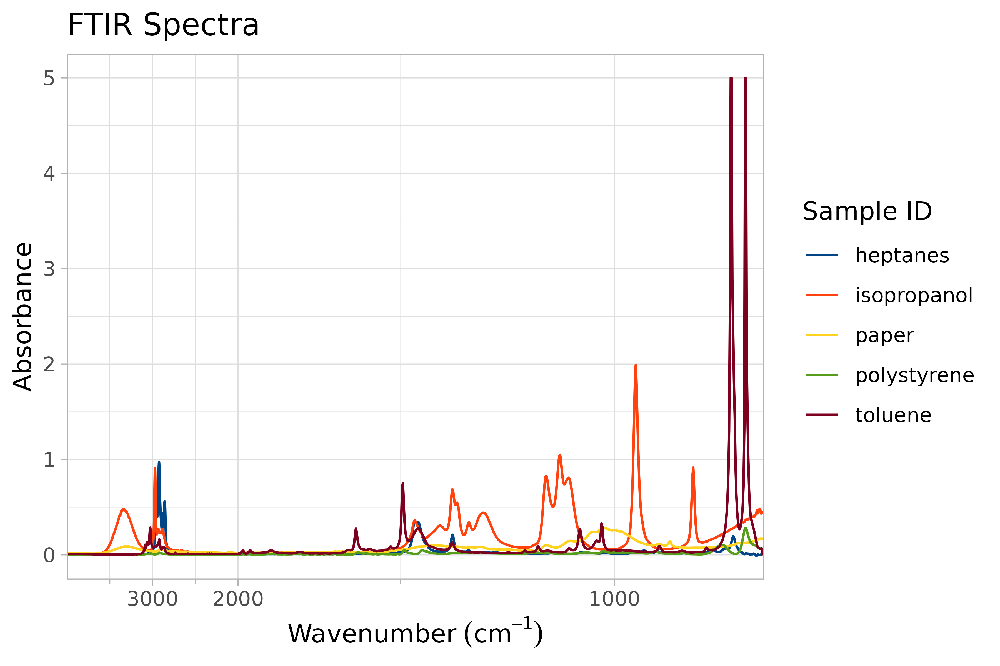
You’ll see the usage of
|>- this indicates that the output of this command is being passed to the first argument of the next command. More information on the pipe can be found in the valuable book R for Data Science (2e) by Hadley Wickham, Mine Çetinkaya-Rundel, and Garrett Grolemund. Alternatively you can capture the output of each line of code in a variable and pass that variable on to the next function called.
You can limit wavenumber range (zoom in) to any plot. If we want to look at the OH & CH stretch region, we can limit the spectra to that range.
plot_ftir(spectra) |>
zoom_in_on_range(c(3600, 2600))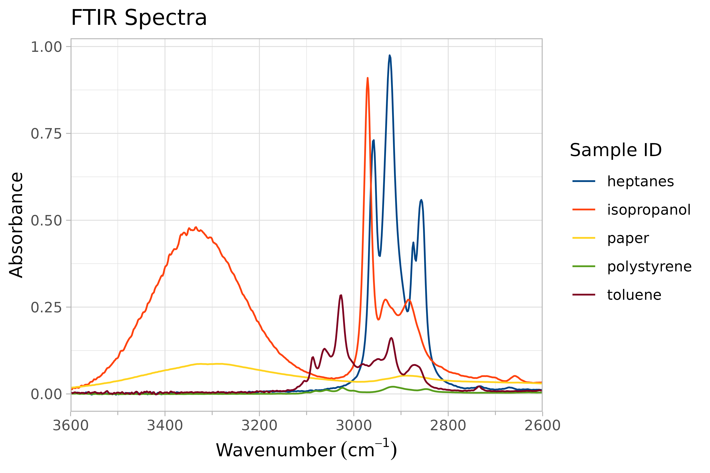
You might notice the plot itself could be adjusted - a section later
discusses modifications using the ggplot2 functions that
underpin the PlotFTIR package.
We can add markers at any specific wavenumber, to indicate
significant peaks or areas of interest. For example, the 1495 wavenumber
peak corresponds with a carbon-carbon bond (aromatic) vibration. This
marker’s label can be coloured or styled in any way, and the line can be
modified as well. See the ggplot2 documentation for
line_aesthetics and label_aesthetics.
plot_ftir(spectra) |>
add_wavenumber_marker(
wavenumber = 1495,
text = "C-C Aromatic",
line_aesthetics = list("linetype" = "dashed"),
label_aesthetics = list("color" = "#7e0021")
)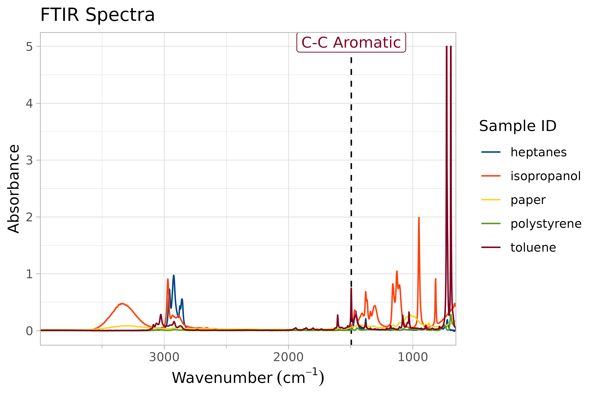
Note that any number of markers can be added, before or after other transformations of the spectral plot. The text of multiple markers may overlap.
All of the manipulations can be done in sequence to one image. This allows you to easily produce plots modified to your samples and annotated per your need.
plot_ftir(spectra, plot_title = c("My FTIR Plot", "Closeup of Detailed Region 1600 to 800 wavenumbers"), legend_title = "Samples:") |>
move_plot_legend(position = "bottom") |>
zoom_in_on_range(zoom_range = c(1600, 800)) |>
add_wavenumber_marker(wavenumber = 1495, text = "C-C Aromatic", line_aesthetics = c(color = "#7e0021", linetype = "dotted")) |>
add_wavenumber_marker(wavenumber = 817, text = "C-C-O\nsymmetric", line_aesthetics = c(color = "#ff420e", linetype = "dotted")) |>
add_wavenumber_marker(wavenumber = 1380, text = "CH3", line_aesthetics = c(linetype = "dashed")) |>
rename_plot_sample_ids(c("C7 Alkane" = "heptanes", "2-Propanol" = "isopropanol", "Toluene" = "toluene"))
#> Error in `add_wavenumber_marker()`:
#> ! Error in `PlotFTIR::add_wavenumber_marker()`. `line_aesthetics` must
#> be a named list. You provided a character vector.Some instruments collect data in transmittance units, others in
absorbance units. It could also be required to plot FTIR spectra in some
specific units for a journal or report, or to compare to other existing
literature. Fortunately, the two are related by a simple mathematical
function. Two functions exist in this package to easily swap between the
two y-axis units. We’ll use absorbance_to_transmittance()
but the inverse transmittance_to_absorbance() is available
as well.
transmittance_spectra <- absorbance_to_transmittance(spectra)
plot_ftir(transmittance_spectra)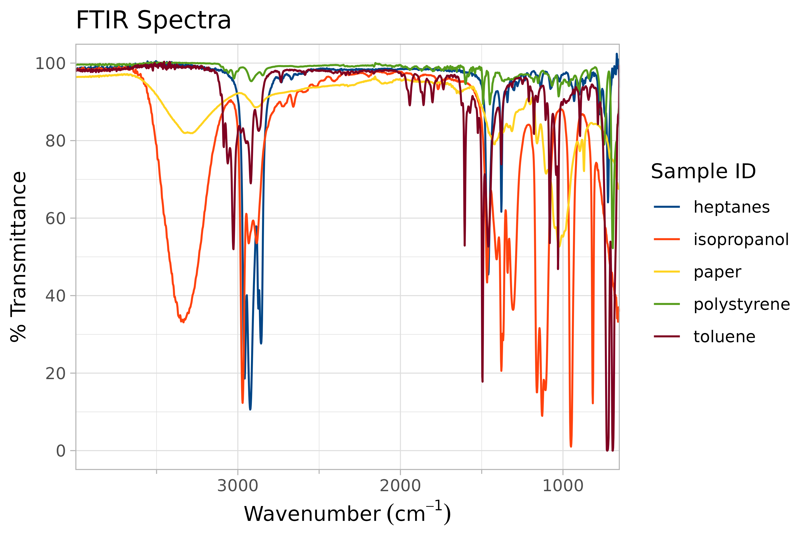
It may be desired to shift a sample’s result on the plotted spectra
by a certain numerical amount. This can be done by adding or subtracting
a scalar value - a single value of a set magnitude. We can
use the add_scalar_value() or
subtract_scalar_value() function to do that addition or
subtraction to the data prior to plotting. These functions can act on
all the spectra in the data set, or only on specific sample_ids as
provided.
shifted_spectra <- add_scalar_value(ftir = spectra, value = 0.2, sample_ids = c("heptanes", "toluene"))
plot_ftir(shifted_spectra)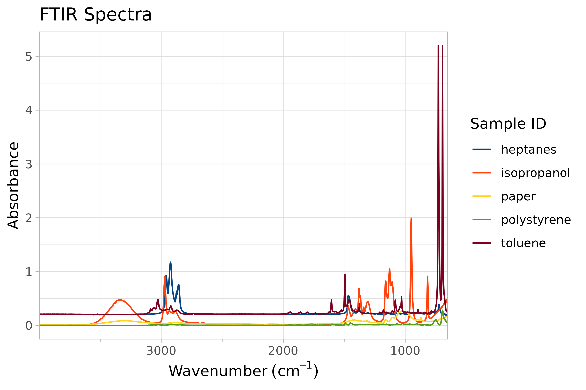
Note that just the heptanes and toluene are shifted!
Sometimes you may have analyzed samples in replicate and wish to
average their results together. In this situation, it may be easier to
see an average of the spectra instead of all of those available. Our
sample spectra doesn’t include any replecate analysis, but this can be
performed by calling average_spectra(). This returns a
data.frame which includes only the resulting
average, even if you’ve only averaged a few of the samples (this is
important to note, because if we averaged "toluene" and
"heptanes" from the sample spectra set, the resulting
data.frame wouldn’t include "isopropanol",
"paper" or "polystyrene" spectra, so they
would be lost by this process).
It’s possible to adjust baselines by a few different mechanisms in
PlotFTIR. The baseline can be adjusted at a single point
(i.e. set that point to 0 absorbance or 100 transmittance and shift the
rest of the spectra accordingly), at a minimum (or maximum for
transmittance) across a certain range, or the whole spectra, or by an
average of values across a range.
This can be done on a single sample in the data set, on each sample individually (where the amount of shift could be different for each sample), or the amount of baseline shift can be applied to all of the samples at once (i.e. where the same shift is applied to all of the samples).
All of these shifts are achieved by calling the
recalculate_baseline() function.
For this demonstration, we’ll use the biodiesel data
contained in the package. It’s a set of spectra of diesel samples
containing increasing amount of biodiesel.
plot_ftir(biodiesel) |>
zoom_in_on_range(c(2000, 1000))If you look closely, all of the spectra are floating just above the 0
absorbance line. We can adjust those down then plot the same. We’ll
recalculate based on the average (method = "average")
across the wavenumber_range = c(2000, 1900), and move all
of the samples by their own calculated amount
(i.e. individually = TRUE).
biodiesel |>
recalculate_baseline(method = "average", wavenumber_range = c(2000, 1900), individually = TRUE) |>
plot_ftir() |>
zoom_in_on_range(c(2000, 1000))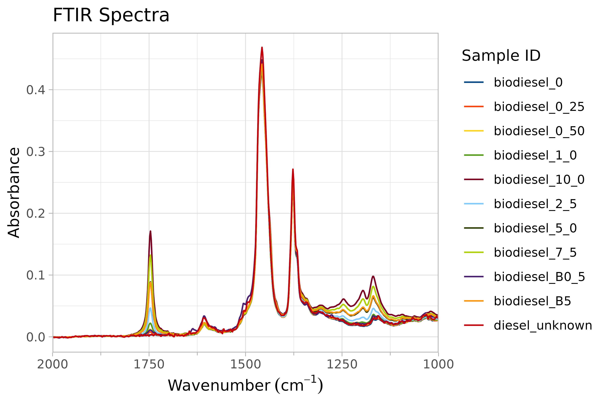
Of course, if you aren’t careful with baselining you can get some weird results. If we didn’t pay attention and tried to adjust by the point at 1250 cm-1 individually, we’d get a plot that’s not useful in most situations (even if it looks cool).
biodiesel |>
recalculate_baseline(method = "point", wavenumber_range = 1250, individually = TRUE) |>
plot_ftir() |>
zoom_in_on_range(c(2000, 1000))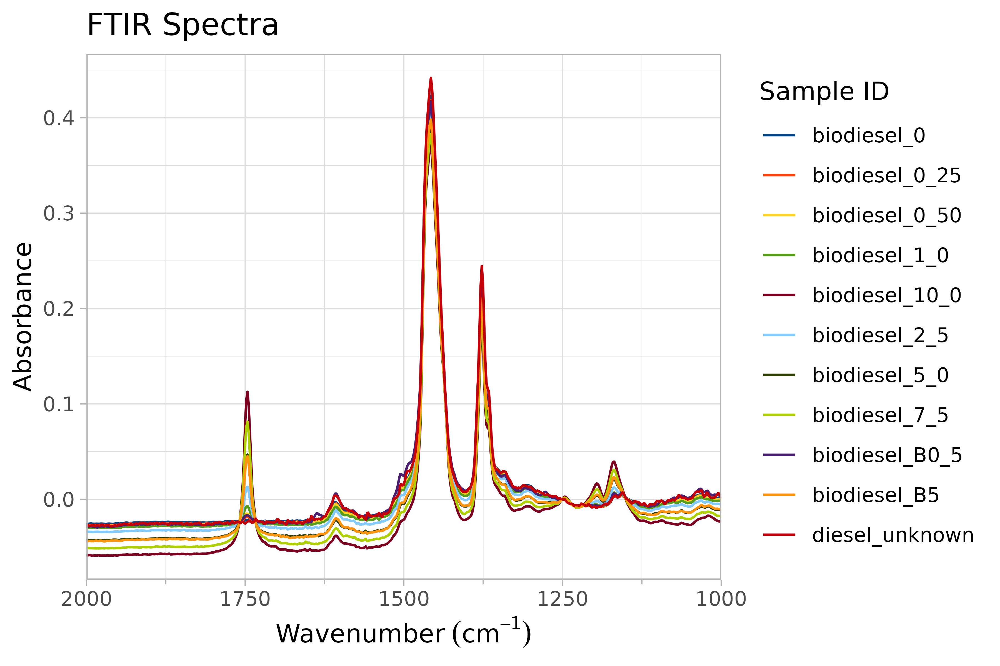
Instead, it might be more useful to adjust all of the spectra by the minimum point in a range (the minimum of each sample’s minimum in the range). This puts that region close to zero, without removing what might be otherwise useful differences in absorbance.
biodiesel |>
recalculate_baseline(method = "minimum", wavenumber_range = c(1300, 1000), individually = FALSE) |>
plot_ftir() |>
zoom_in_on_range(c(2000, 1000))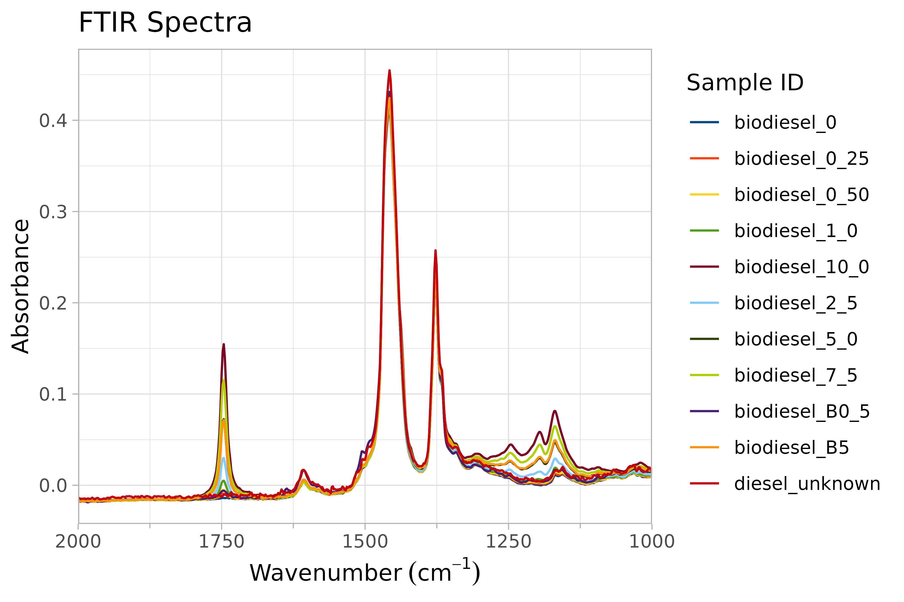
The PlotFTIR package contains convenient functions for
saving spectra plots to disk. This wraps the ggplot2
graphics package function, so much more specific information can be
found in
their documentation. Options for filetypes include “eps”, “ps”,
“tex” (pictex), “pdf”, “jpeg”, “tiff”, “png”, “bmp”, “svg” or “wmf” (on
windows only). More options as described in the documentation for
ggplot::ggsave() above can be passed to the function to
tune your output file (options such as resolution, size, etc.).
biodiesel |>
ploft_ftir() |>
save_plot(filename = "my_ftir_plot.png", filetype = ".png")De nombreux chimistes utilisent la spectroscopie infrarouge à transformée de Fourier (IRTF) pour analyser les produits chimiques et les matériaux dans leurs laboratoires. Ils peuvent tester la pureté, la composition des mélanges, les changements dans les groupes fonctionnels ou évaluer d’autres propriétés. Ces spectres sont parfois inclus dans des articles de journaux mais, jusqu’à présent, R ne dispose pas d’un outil pratique pour tracer les spectres.
Dans ce document, nous utiliserons les données intégrées dans le
package PlotFTIR pour démontrer le chargement des données,
leur modification et le tracé des spectres résultants. Bien que le
paquetage ne dispose pas de fichiers de données brutes, nous simulerons
cette partie en lisant les données intégrées à partir du disque.
Pour lire les fichiers IRTF dans R, le package PlotFTIR
doit être installé et chargé. L’installation de la version stable du
package peut se faire à partir de CRAN.
install.packages("PlotFTIR")Si vous souhaitez installer la version de développement de ce
package, vous pouvez le faire en utilisant le package
devtools:
devtools::install_github("NRCan/PlotFTIR")Une fois installé (par n’importe quelle méthode), le package doit être activé dans R avant utilisation.
Ce document suppose que vous disposez de fichiers de spectres IRTF au
format .csv, .txt (délimité par des virgules) ou .asp. D’autres types de
fichiers pourront être pris en charge à l’avenir. Nous pouvons lire les
fichiers individuellement en utilisant la fonction
read_ftir(), ou (comme nous allons le faire) vous pouvez
lire n’importe quel nombre de fichiers dans un répertoire. Nos données
sont stockées dans une variable file_directory, mais vous
pouvez fournir votre propre emplacement (comme
“C:/Users/[userid]/FTIR/Data” ou tout autre endroit où vos fichiers sont
stockés).
spectres <- read_ftir_directory(
path = file_directory,
files = c("toluene.csv", "heptanes.csv", "isopropanol.csv", "paper.csv", "polystyrene.csv"),
sample_names = c("toluene", "heptanes", "isopropanol", "paper", "polystyrene")
)
head(spectres)
#> PlotFTIR data:
#> Spectral range: 650.4205 - 659.7388 cm⁻¹
#> Resolution: variable
#> Intensity type: absorbance
#> Number of samples: 1
#> Sample IDs: tolueneAprès avoir chargé les données, nous pouvons voir qu’elles ont une
structure de trois colonnes, nommées wavenumber,
absorbance et sample_id. Nous avons lu
quelques fichiers, donc tous les spectres sont inclus dans un seul objet
spectres.
Les spectres chargés peuvent être tracés (avec des valeurs par défaut
raisonnables) en une seule ligne de code (notez que l’ajout de
lang = 'fr' produit un tracé avec des titres français):
plot_ftir(spectres, lang = "fr")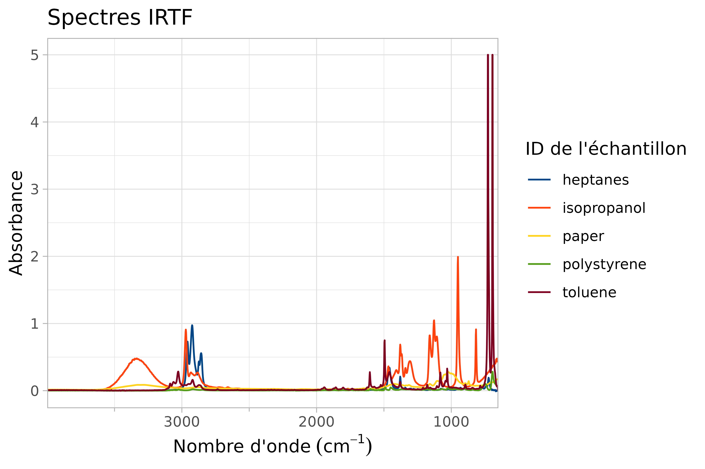
Si vous tracez plusieurs échantillons (comme nous le faisons ici), vous pouvez décaler les échantillons sur l’axe des y pour pouvoir voir plus clairement les différences là où ils auraient pu se chevaucher près de la ligne de base:
plot_ftir_stacked(spectres, lang = "fr")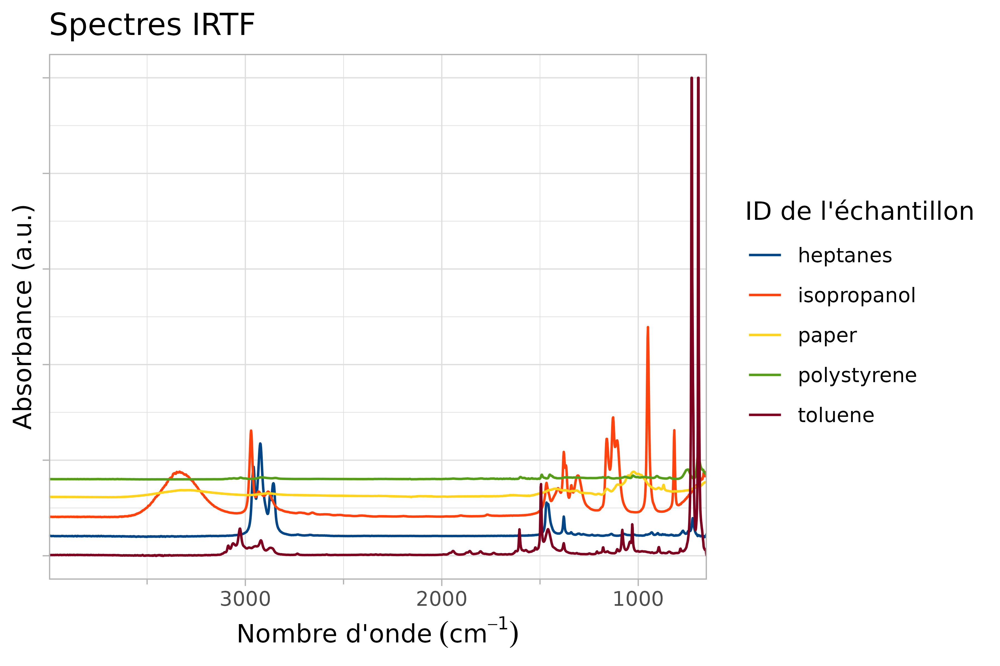
Nous pouvons modifier ce tracé de plusieurs manières:
Le titre et le sous-titre du tracé, ainsi que le titre de la légende
sont tous configurables. L’emplacement de la légende peut également être
modifié ! Pour ajouter un sous-titre, passez un vecteur de texte à deux
éléments à l’argument plot_title de
plot_ftir().
plot_ftir(spectres, lang = "fr", plot_title = c("Titre de mon tracé de spectres", "Tracé avec PlotFTIR"), legend_title = "Echantillons:") |>
move_plot_legend(position = "bottom")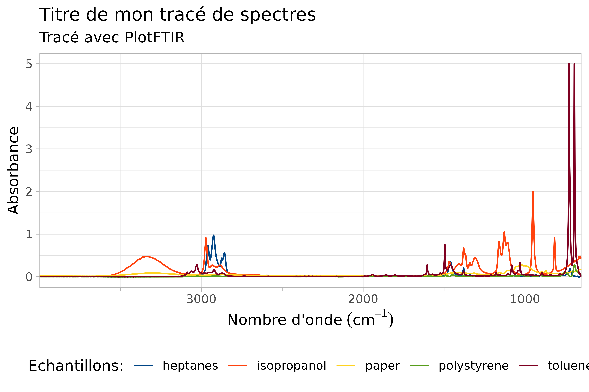
Lorsque le tracé a été produit, il est facile de renommer les
échantillons dans la légende. Cela peut être utile pour passer d’une
analyse exploratoire à un produit final, ou si les noms des échantillons
dans les données sont très longs et que vous avez des formes abrégées
que vous voulez montrer sur le tracé. Le format de renommage est
"nouveau_nom" = "ancien_nom". Il n’est pas nécessaire de
faire correspondre tous les sample_id, les échantillons qui
n’ont pas été renommés conserveront le nom qu’ils portent
actuellement.
plot_ftir(spectres, lang = "fr") |>
rename_plot_sample_ids(sample_ids = c("methylbenzene" = "toluene", "C7" = "heptanes"))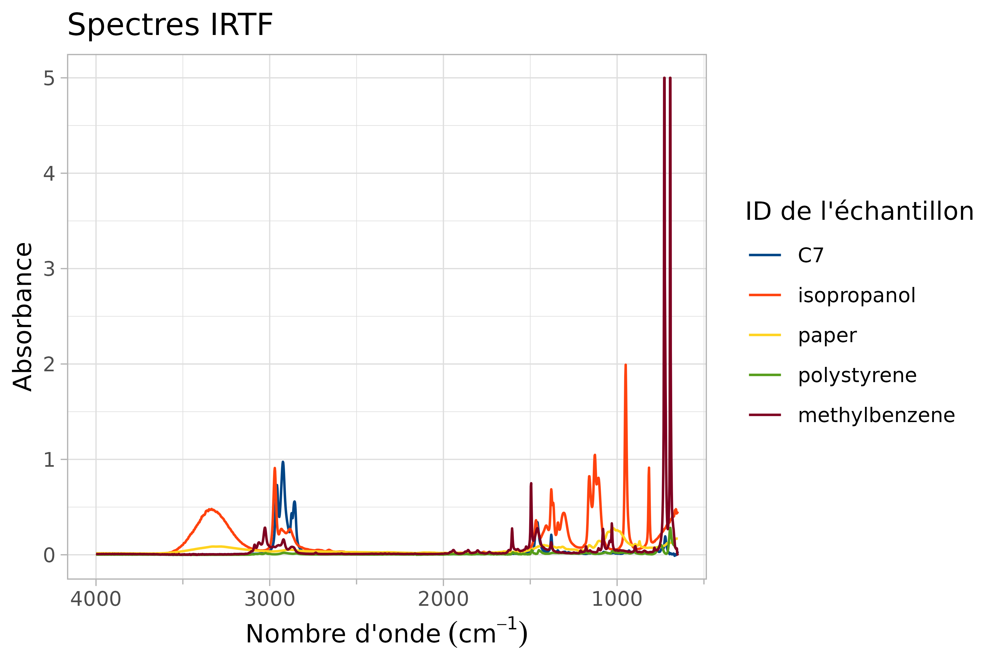
La région de basse énergie d’un tracé IRTF peut ne pas présenter beaucoup d’intérêt. Nous pouvons les compresser pour économiser de l’espace graphique et améliorer la visualisation de la région plus complexe de l’empreinte digitale à plus haute énergie.
plot_ftir(spectres, lang = "fr") |>
compress_low_energy(cutoff = 1850, compression_ratio = 5)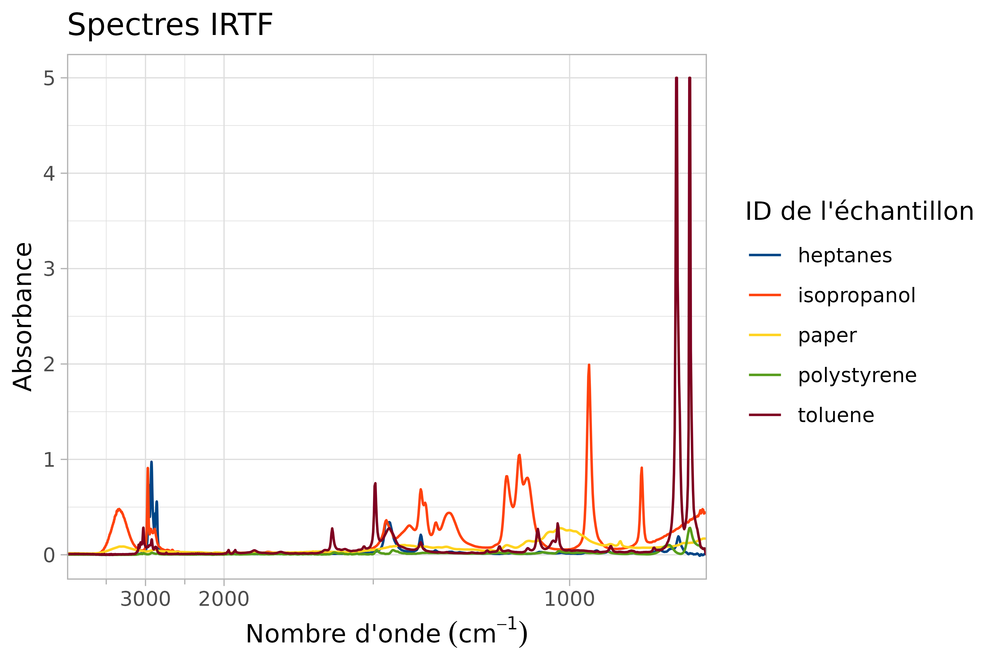
Vous verrez l’utilisation de
|>- cela indique que la sortie de cette commande est transmise au premier argument de la commande suivante. Vous trouverez plus d’informations sur le pipe dans le livre [R for Data Science (2e)] (https://r4ds.hadley.nz/workflow-style.html#sec-pipes) de Hadley Wickham, Mine Çetinkaya-Rundel et Garrett Grolemund. Vous pouvez également capturer la sortie de chaque ligne de code dans une variable et transmettre cette variable à la prochaine fonction appelée.
Vous pouvez limiter la gamme de nombres d’ondes (zoomer sur) à n’importe quel tracé. Si nous voulons examiner la région d’étirement OH & CH, nous pouvons limiter les spectres à cette gamme.
plot_ftir(spectres, lang = "fr") |>
zoom_in_on_range(c(3600, 2600))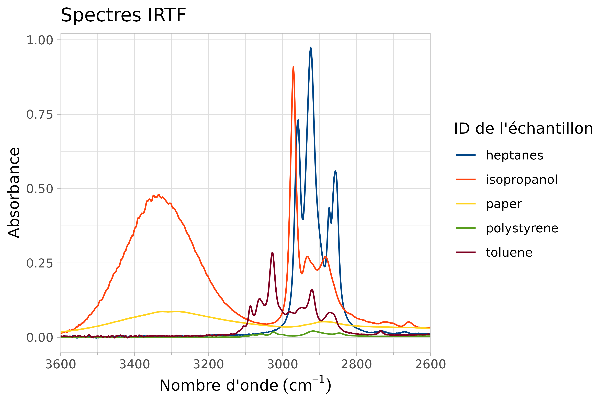
Vous remarquerez peut-être que le tracé lui-même pourrait être ajusté
- une section ultérieure traite des modifications en utilisant les
fonctions ggplot2 qui sont à la base du paquetage
PlotFTIR.
Nous pouvons ajouter des marqueurs à n’importe quel nombre d’ondes
spécifique, pour indiquer les pics significatifs ou les zones d’intérêt.
Par exemple, le nombre d’ondes de 1495 correspond à une vibration de
liaison carbone-carbone (aromatique). L’étiquette de ce marqueur peut
être colorée ou stylisée à volonté, et la ligne peut également être
modifiée. Voir la documentation de ggplot2 pour
line_aesthetics et label_aesthetics.
plot_ftir(spectres, lang = "fr") |>
add_wavenumber_marker(
wavenumber = 1495,
text = "C-C aromatique",
line_aesthetics = list("linetype" = "dashed"),
label_aesthetics = list("color" = "#7e0021")
)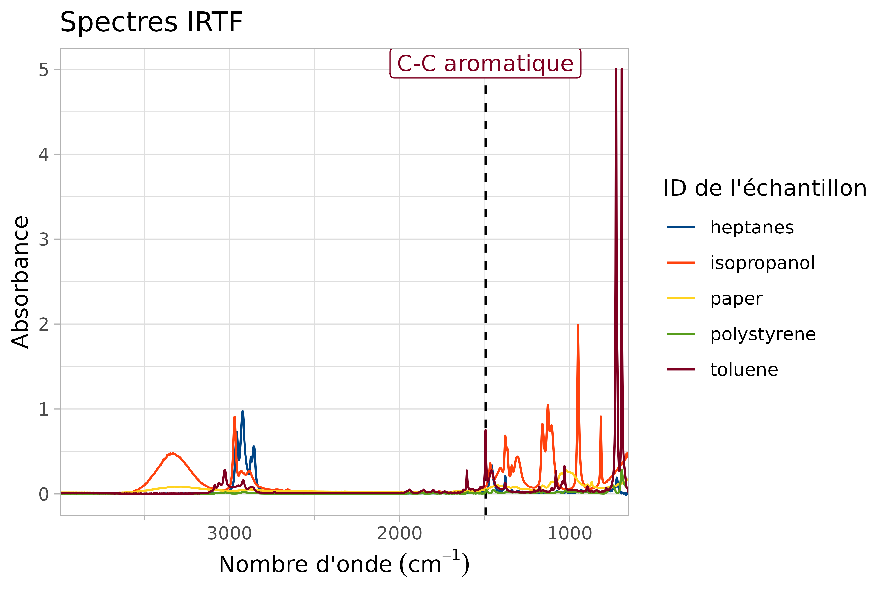
Notez qu’un nombre quelconque de marqueurs peut être ajouté, avant ou après d’autres transformations du tracé spectral. Le texte de plusieurs marqueurs peut se chevaucher.
Toutes les manipulations peuvent être effectuées en séquence sur une image. Cela vous permet de produire facilement des tracés modifiés en fonction de vos échantillons et annotés selon vos besoins.
plot_ftir(spectres, lang = "fr", plot_title = c("Mon Tracé IRTF", "Gros plan de la région détaillée de 1600 à 800 nombres d'ondes"), legend_title = "Samples:") |>
move_plot_legend(position = "bottom") |>
zoom_in_on_range(zoom_range = c(1600, 800)) |>
add_wavenumber_marker(wavenumber = 1495, text = "C-C aromatique", line_aesthetics = c(color = "#7e0021", linetype = "dotted")) |>
add_wavenumber_marker(wavenumber = 817, text = "C-C-O\nsymétrique", line_aesthetics = c(color = "#ff420e", linetype = "dotted")) |>
add_wavenumber_marker(wavenumber = 1380, text = "CH3", line_aesthetics = c(linetype = "dashed")) |>
rename_plot_sample_ids(c("C7 alcane" = "heptanes", "2-Propanol" = "isopropanol", "Toluene" = "toluene"))
#> Error in `add_wavenumber_marker()`:
#> ! Error in `PlotFTIR::add_wavenumber_marker()`. `line_aesthetics` must
#> be a named list. You provided a character vector.Certains instruments collectent des données en unités de
transmittance, d’autres en unités d’absorbance. Il peut également être
nécessaire de tracer les spectres IRTF dans certaines unités spécifiques
pour une revue ou un rapport, ou pour les comparer à d’autres documents
existants. Heureusement, les deux sont liés par une simple fonction
mathématique. Deux fonctions existent dans ce package pour permuter
facilement entre les deux unités de l’axe des ordonnées. Nous
utiliserons absorbance_to_transmittance() mais la fonction
inverse transmittance_to_absorbance() est également
disponible.
spectres_transmittance <- absorbance_to_transmittance(spectres)
plot_ftir(spectres_transmittance, lang = "fr")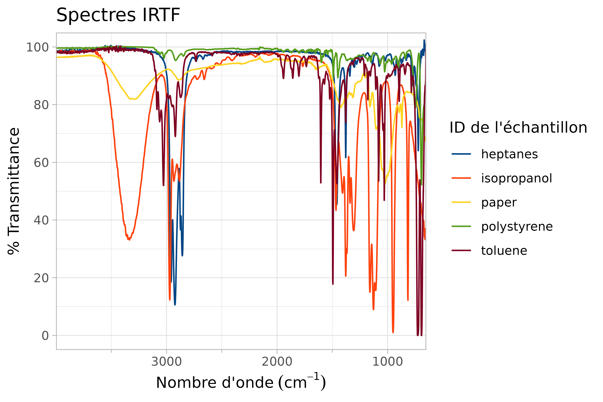
Il peut être souhaitable de décaler le résultat d’un échantillon sur
les spectres tracés d’une certaine valeur numérique. Ceci peut être fait
en ajoutant ou en soustrayant une valeur “scalaire” - une valeur unique
d’une magnitude définie. Nous pouvons utiliser les fonctions
add_scalar_value() ou subtract_scalar_value()
pour effectuer cet ajout ou cette soustraction aux données avant de les
tracer. Ces fonctions peuvent agir sur tous les spectres de l’ensemble
de données, ou seulement sur des identifiants d’échantillons
spécifiques.
spectres_decales <- add_scalar_value(ftir = spectres, value = 0.2, sample_ids = c("heptanes", "toluene"))
plot_ftir(spectres_decales, lang = "fr")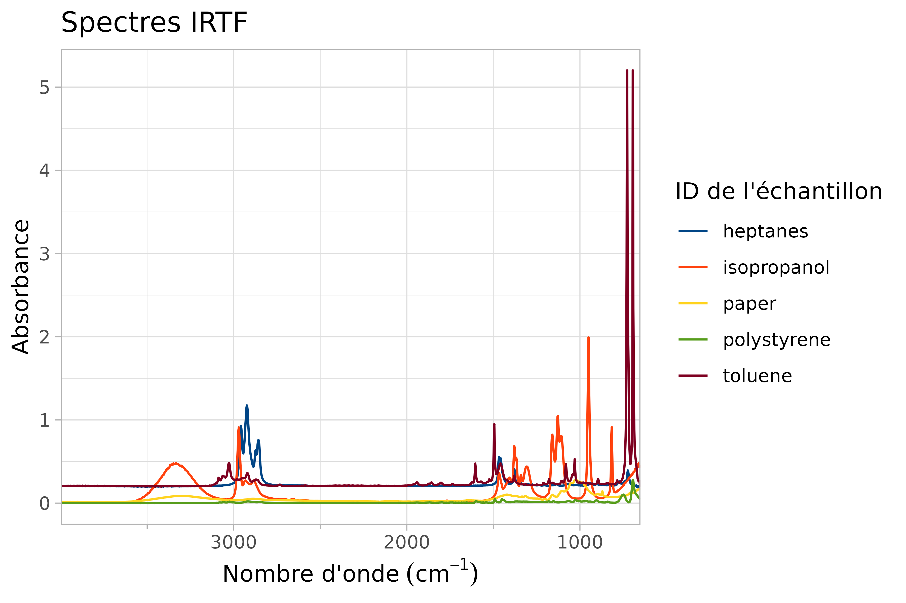
Notez que seuls les heptanes et le toluène sont décalés.
Il peut arriver que vous ayez analysé des échantillons en double et
que vous souhaitiez faire la moyenne de leurs résultats. Dans ce cas, il
peut être plus facile de voir une moyenne des spectres au lieu de tous
les spectres disponibles. Notre échantillon de spectres n’inclut pas
d’analyse de réplétion, mais il est possible de le faire en appelant
average_spectra(). Ceci renvoie un data.frame
qui inclut uniquement la moyenne résultante, même si vous
n’avez fait la moyenne que de quelques échantillons (il est important de
le noter, car si nous faisons la moyenne des spectres
"toluène" et "heptanes" de l’échantillon, le
data.frame résultant n’inclurait pas les spectres
"isopropanol", "papier" ou
"polystyrène", donc ils seraient perdus par ce
processus).
Il est possible d’ajuster les lignes de base par différents
mécanismes dans PlotFTIR. La ligne de base peut être
ajustée en un seul point (c.-à-d. fixer ce point à 0 absorbance ou 100
transmittance et décaler le reste des spectres en conséquence), à un
minimum (ou un maximum pour la transmittance) sur une certaine gamme, ou
sur l’ensemble des spectres, ou par une moyenne des valeurs sur une
gamme.
Cette opération peut être effectuée sur un seul échantillon de l’ensemble de données, sur chaque échantillon individuellement (où l’ampleur du décalage peut être différente pour chaque échantillon), ou l’ampleur du décalage de la ligne de base peut être appliquée à tous les échantillons en même temps (c’est-à-dire que le même décalage est appliqué à tous les échantillons).
Tous ces changements sont réalisés en appelant la fonction
recalculate_baseline().
Pour cette démonstration, nous utiliserons les données
biodiesel contenues dans le paquet. Il s’agit d’un ensemble
de spectres d’échantillons de diesel contenant des quantités croissantes
de biodiesel.
plot_ftir(biodiesel, lang = "fr") |>
zoom_in_on_range(c(2000, 1000))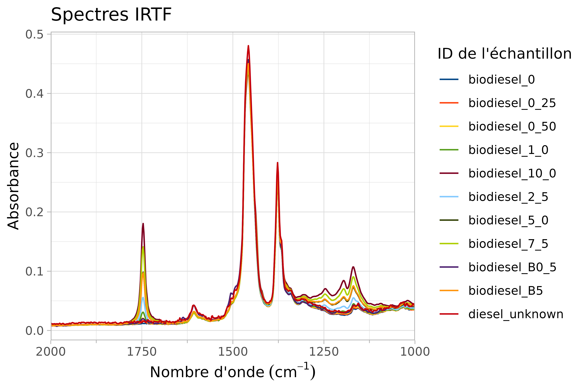
Si vous regardez de près, tous les spectres flottent juste au-dessus
de la ligne d’absorbance 0. Nous pouvons les ajuster vers
le bas puis tracer les mêmes. Nous allons recalculer sur la base de la
moyenne (method = "average") sur l’ensemble de
wavenumber_range = c(2000, 1900), et déplacer tous les
échantillons de leur propre quantité calculée
(c.-à-d. individually = TRUE).
biodiesel |>
recalculate_baseline(method = "average", wavenumber_range = c(2000, 1900), individually = TRUE) |>
plot_ftir(lang = "fr") |>
zoom_in_on_range(c(2000, 1000))Bien sûr, si l’on ne fait pas attention à l’alignement de base, on peut obtenir des résultats bizarres. Si nous ne faisions pas attention et essayions d’ajuster individuellement le point à 1250 cm-1, nous obtiendrions un tracé qui n’est pas utile dans la plupart des situations (même s’il a l’air cool).
biodiesel |>
recalculate_baseline(method = "point", wavenumber_range = 1250, individually = TRUE) |>
plot_ftir(lang = "fr") |>
zoom_in_on_range(c(2000, 1000))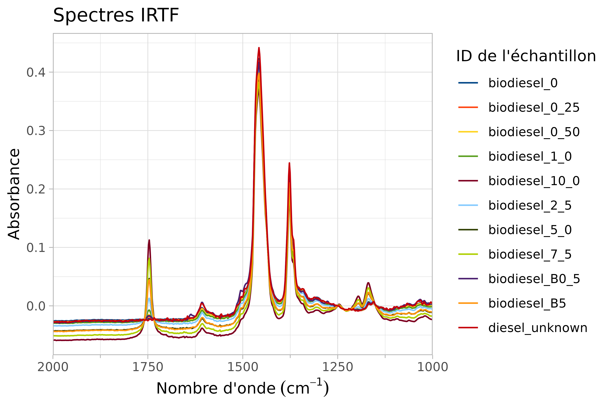
Il serait plus utile d’ajuster tous les spectres en fonction du point minimum d’une gamme (le minimum de chaque échantillon dans la gamme). Cela permet de rapprocher cette région de zéro, sans supprimer les différences d’absorbance qui pourraient être utiles.
biodiesel |>
recalculate_baseline(method = "minimum", wavenumber_range = c(1300, 1000), individually = FALSE) |>
plot_ftir(lang = "fr") |>
zoom_in_on_range(c(2000, 1000))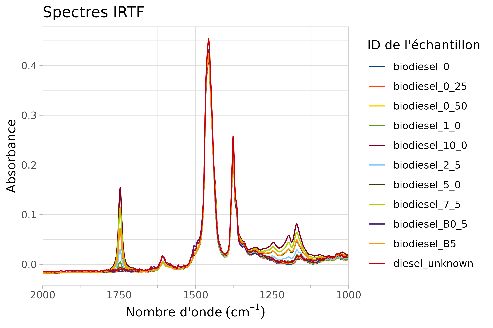
Le paquet PlotFTIR contient des fonctions pratiques pour
sauvegarder les tracés de spectres sur le disque. Cette fonction reprend
celle du paquet graphique ggplot2, de sorte que des
informations plus spécifiques peuvent être trouvées [dans leur
documentation] (https://ggplot2.tidyverse.org/reference/ggsave.html).
Les options pour les types de fichiers incluent “eps,”ps”, “tex”
(pictex), “pdf”, “jpeg”, “tiff”, “png”, “bmp”, “svg” ou “wmf” (sous
Windows uniquement). D’autres options décrites dans la documentation de
ggplot::ggsave() ci-dessus peuvent être passées à la
fonction pour ajuster votre fichier de sortie (options telles que la
résolution, la taille, etc.).
biodiesel |>
ploft_ftir() |>
save_plot(filename = "mon_trace_irtf.png", filetype = ".png")